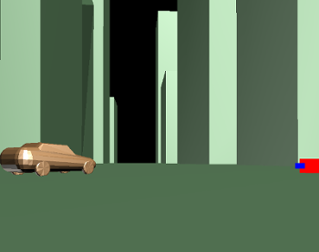

Group Assignment 1
Image Sources for Acoustic Simulations (100 Points)
By Chris Tralie
Click here to see art contest results!
- Overview
- Getting Started / Software Description
- Core Technique
- Scene File Submissions
- Additional Sound Effects
- Computational Improvements
- Other
Overview
Now that students have had some practice with vector manipulations in Javascript, it's time to apply these skills to a larger and more comprehensive problem. In this first partner assignment, students will implement the image sources algorithm to model all specular reflections (angle in equals angle out) between a sound source and a sound receiver up to a certain order (number of bounces) in a virtual 3D environment modeled by a collection of polygons. Each polygon has material properties that describe how much sound is absorbed or reflected, and the polygons are placed somewhere within a scene graph (hierarchy of transformations between polygons) specified in JSON. Based on the lengths of the paths from source to receiver and the material properties, students will then compute an impulse response (time function that records when each of the bounces occurs) which can be used to simulate how any sound emanating from the source would sound like at the receiver. Students can then run and listen to sound simulations in the environment they created real time in the browser
Point System
In this assignment, groups of 1 or 2 will have to earn 100 points, while groups of 3 will have to earn 120 points (groups of 3 final score will be scaled down by a factor of 5/6). The tasks highlighted in blue are mandatory for all teams, but otherwise you can get to 100 points however you'd like out of the remaining tasks. If you choose to do more than the base number of required points,then each point beyond that is worth 9/10 as many as the previous one (leading to a geometric series). So for instance, if you were on a team of 2 and earned 105 points, you would get 100 + (9/10) + (9/10)^2 + (9/10)^3 + (9/10)^4 + (9/10)^5 points. Thus, the absolute highest score you could get is bounded from above at 110 points (since that geometric series asymptotically approaches 10).
I stole this idea from my undergraduate adviser .
Deadlines
The first section (50/100 points) will be due at 11:59 PM on Monday 2/22. Groups who do not make this deadline will be docked 15 points, but these can be made up by the final deadline with extra tasks. No late days can be used on this first submission. The final deadline will be at 11:59 PM on Wednesday 3/2. For the final deadline, groups of 1-2 must submit an assignment with at least 100 points of tasks completed, and groups of 3 must submit assignments with 120 points worth of tasks completed.What To Submit
You should submit some sort of README file that for every section that includes what you did, and any known bugs. Even for the basic tasks, there are different ways of doing things (such as finding areas of polygons), and there are optional special cases that I mentioned during the course of the assignment, so please tell me exactly what you did to get full credit and possibly extra points. For the scene file sections, please describe each scene file and provide screenshots.(PDF Format would be best but .docx is also fine)
Also please don't forget to submit all scene files and sounds that go along with them.
Getting Started / Software Description
Click here to download the starter code
The main file you will be editing is Algorithms.js. You can also add debugging code in the rendering functions in SceneFile.js. The main entry point for running the code is index.html.
NOTE: Because of Javascript cross-site scripting attacks, certain browsers may not let you run this code directly from your computer. You may have to create a virtual webserver on your computer first. The easiest way to do this is to use Python's built-in webserver. Pull up a terminal at the root of the code directory and type
Or if you have Python3 installed, type
python -m SimpleHTTPServer
By default, this will provide access to your code on port 8000 on your local machine, so you would go to the link http://127.0.0.1:8000/ to run your code. Please post on Piazza if you are having trouble with this
py -m http.server
Scene File Format / Running Code
The most important organizing principle in this assignment is the scene graph. We talked about scene graphs in class; they are a way to organize a complex hierarchy of transformations in a virtual environment. In this assignment, you will load environments into the simulator that are specified as scene graphs in JSON. Below is an example which places two boxes on top of a square: At the root of each scene, you need to specify an initial position of the receiver and the source (which can be interactively changed in the GUI in index.html). You then need to specify an array of children, each of which is an object with four fields:- mesh: A path to a polygon mesh which is a bunch of convex polygons that are stitched together to form a surface (in this assignment the convexity assumption helps make point containment tests easier...see "path extraction" in core techniques). The polygon mesh exists in world coordinates by walking up the transformations in the tree, as explained in class
- color: An (r, g, b) array for the color to be used with rendering. This is otherwise inconsequential in the sound rendering, but you might define a similar array if you do the "material bandpass" task.
- rcoeff: A reflection coefficient for the material on the mesh, which is a number between 0 and 1 describing the fraction of energy that is reflected off of the surface when rays hit it. Lower numbers mean the surface dampens sound more. You will use this as one of the attenuation factors when you generate an impulse response.
- transform:: A 4x4 matrix with homogenous coordinates for describing the rotation/scale/flip/translation that says how to orient the mesh in this node in the coordinate frame of its parent
- children:: An optional array of children to continue the hierarchy. Each element in this array will have the exact same fields just described above, and it will be one level down in the tree with this node as its parent
Click here to see a live demo of the scene graph software on a simple scene
Once you have loaded the scene, you can switch between receiver/source/external to change the positions of those objects (external is just an external camera viewer that doesn't impact the simulation). Use the following controls to navigate the virtual environment and move around these objects:| W | Forward |
| S | Backward |
| A | Left |
| D | Right |
| E | Up |
| C | Down |
| Click + Drag | Rotate up/down and left/right |
Then, once you've filled in the core techniques, a typical run of the program goes in the following order, using the provided buttons
- Positions source/receiver
- Compute image sources of a certain order
- Extract all paths from source to receiver based on generated images
- Load in audio file
- Compute impulse response
- Play impulse response (listen to it)
- Recompute convolution
- Play convolution (to hear the loaded sound with all of the echoes)
sounds directory. Note that if you change the position of the source/receiver, you will have to repeat steps 2-3. If you load a new sound with a different sampling rate, you will need to redo step 5 (since the impulse response sample times depend on the sampling rate). In both of these cases, you will need to repeat step 7 to recompute the convolution in order for the auralized echoes to be correct.
Accessing Polygon Faces / Polygon Normals
Every node that isn't a dummy node has amesh object field, and every mesh object has an array of faces. Every object in faces has a function getVerticesPos() that returns an array of vec3 objects describing the location of that face's vertices in the node's coordinate system. You can assume that the nodes specify a convex polygon (this makes the containment test in rayIntersectPolygon() easier). Below is a code snippet that demonstrates looping through all of the faces of the mesh associated with a particular node in the scene graph and getting all of the vertices for each face
Also have a look at the code in the provided function scene.rayIntersectFaces() for an example of accessing the mesh face geometry this way (this code also provides a good example of how to recursively traverse the scene graph). Note that verts contains locations of the vertices in the mesh with respect to that node's coordinate system, but you need to place them in world coordinates when generating image sources or extracting paths based on that node's position in the scene graph and the transformations that occurred along the hierarchy above it.
Similarly, if you want to compute the normal of a face, you can use the function
face.getNormal() to get the normal in the node's coordinate system, but as discussed in class, you will have to transform this normal into world coordinates a special way with a "normal matrix" (the function mat3.normalFromMat4() may come in handy here). To avoid this mess, you can also just transform all of the points into world coordinates and compute the normal from scratch the ordinary way (the same way you did in mini assignment 1 for the above or below test) using the transformed vertices.
Core Technique
This is the basic image sources algorithm that you will run to create an impulse response from a chosen source position to a chosen receiver position. Every task in this section is required, and successful completion of the tasks will get you to 65/100 points.Image Source Generation (20 points)
Given a source position, create image sources by reflecting the source across the plane spanned by each polygon in the scene. Also, recursively create image sources of the new images sources up to a specified order. To do this, you should fill in the functionscene.computeImageSources(order)inAlgorithms.js. The comments in that function give more information and guidance on what to compute and where to store it. Be careful to keep track of which faces generate which images, so that you don't accidentally reflect an image right back onto its parent image (this will also be useful for the "excludeFace" parameter in path extraction below).
Also note that the comments recommend to use recursion, but you don't need to use recursion for the image sources generation part; you only need to use recursion for traversing the scene graph (scene.rayIntersectFaces()shows an example of this). For the image sources, it's enough to have an outer loop that loops through each order (starting at 1 up to the maximum order) and checks all of the previous image sources inscene.imsources, only reflecting those with an order one less than the current order. You'll notice that the original source (scene.source) has been added as the first and only item in imsources, and it's at order 0, so that the first iteration of the loop at order 1 will only be reflecting that source across all faces.
Finally, just as a rehashing of some JSON, here's how you should initialize a new mirror image to add to the list. Let's say for example that you wanted to create a new mirror image object with position "p", order 2, parent image "image", genFace "f" (the mesh face that generated it...needed later when ray tracing so you know where to intersect), and rcoeff "r" (the reflection coefficient of the generating face). Then you would create an object as follows: The picture below is a screenshot from correctly working software which computes the virtual images for a source at the center of a box. In this case there should be 6 virtual images: one for each of the box faces:

The picture below shows all of the first and second order virtual images for the same box. In this case there should be 6 + 5*6 = 36 virtual images: the 6 first order reflections, and a reflection of each of these 6 across the 5 faces (excluding the face from the original reflection):
Path Extraction (30 points)
Based on the extracted image sources, trace back paths from the receiver to the source, checking to make sure there are no occlusions along the way. Remember, you're always starting by tracing a path from the receiver to an image, and then from the intersection point with that image's corresponding face to the image's parent, and so on all the way until you get back to the original source (See lecture slides for examples).
You should start by filling in the helper functionrayIntersectPolygon(P0, V, vertices, mvMatrix)inAlgorithms.js(see the comments of that function for more guidance). You then need to perform this test recursively on all polygons in the scene for each ray, and you need to check to make sure the first polygon you hit is either- The polygon corresponding to the reflection that gave rise to the virtual source, in the case of a virtual source
- Or behind the original source in the case that we've finally reached the original source (i.e. nothing is in the way on the back to the original source)
scene.extractPaths()inAlgorithms.js. Be sure to also include direct path from receiver to source, in addition to all of the bounced paths you get from virtual images. Here are some tips- Make use of the provided recursive function
scene.rayIntersectFaces(P0, V, node, mvMatrix, excludeFace)
to recursively traverse the scene tree and intersect all faces. This function works withrayIntersectPolygon()to find the location of the first intersection (you will have to modify both of these functions if you choose to do the transmission task). Be sure to check that an intersection with the plane spanned by the polygon is actually contained inside of the polygon. More information about the parameters is provided in the code, but see the next point for what "excludeFace" means - When you make your recursive function and are casting a ray from a particular point on the path that resulted from the ray intersecting a face, be sure to exclude the face that contains that point from the check. Otherwise, it will intersect that face at t = 0, and that face will be in front of every other face. For instance, in the image below, when casting the blue ray from the magenta point, exclude the magenta plane (line in this 2D example) from the occlusion check. You can pass along this face as the parameter
excludeFaceinscene.rayIntersectFaces()
- Below is an example of the code working correctly and correctly detecting occlusions for second order reflections.
In the first example, there's nothing in the way of the paths:

In the second example, there's a box in a position where it blocks one of the second order reflections on its last bounce:
In the third example, there's a box in a position where it blocks that same second order path and also the direct path from source to receiver
You should test your code with simple examples like this to make sure it's working
Impulse Response Generation (15 points)
Now that you have computed a bunch of paths from source to receiver, you have enough information to compute an audio impulse response representing all of the acoustic echoes that reach the source from the receiver. Given a sampling rate of audio Fs (samples per second, often 44100), and given the fact that the speed of sound is 340 meters/second, convert the length of the path in meters into a time in audio samples, and that's where the impulse for that path will be located. To determine the magnitude (decay) of the path, start with a magnitude of 1.0. At each bounce, scale the magnitude down by rcoeff, the reflection coefficient at the polygon that's doing the bouncing. Also, to model radial energy spreading, multiply the magnitude by \[\frac{1}{(1+r)^p}\] for each line segment, where r is the length of each line segment in meters and p <= 1 is some real number that controls how much energy is lost as the paths spread through space (make p smaller for a smaller energy loss over longer distances). Once you have the location in samples and the decay, you can use linear interpolation or gaussian interpolation to spread the energy around nearby samples, as discussed in class, since it's unlikely that the conversion from length to sample gave an integer number (i.e. most impulses fall between bins in a sampled audio impulse response)
Fill in the code in
scene.computeImpulseResponse(Fs)inAlgorithms.js
Scene File Submissions
Once the algorithm is working, you should test it out on a variety of scene files with different geometry to make sure you're getting results which make sense. Some examples are below. In each example you submit, please write in your README what it is showing and what you observeHierarchical rotation (5 points)
Test and submit scene files which show the effect of including a non-trivial hierarchy in the scene graph with a rotation at some node, and show that your code properly handles rays intersecting the rotated mesh at that child (and possibly also the rotated meshes at that child's children). For instance, you could rotate the desk model from the raffle point problem about the y-axis and place it on top of a square to model a rotated desk sitting on a floorReverberation Effect (5 points)
Test and submit scene files which show the effect of varying the reflection coefficients, and explain in your README the differences you hear (recall the racquetball court impulse response example show in class)Near Versus Far (5-15 points)
Remembering that the units in the scene files and meshes are in meters, create one environment in which objects are very close together and one environment in which objects are relatively far from each other, and explain the difference in what you hear in your README file. That gets you 5 points, but if you want to earn more, create a city environment with a bunch of skyscrapers as rectangles and a plane object for the street, and do it to scale. The images below show screenshots of an example of a city I made when I did a similar project as an undergraduate:
 Ellipsoidal Whisper Chamber (15 points)
Take the sphere mesh which has been provided in this assignment, and provide a transformation matrix to get to it in the scene graph which performs a different scale in different directions. Note that the resulting object will be an ellipsoid. This is because the equation for a unit sphere is\[ x^2 + y^2 + z^2 = 1 \]
But if you apply the scaling matrix transformation Then you have\[ x' = ax, y' = by, z' = cz \]
which means that\[ x = \frac{x'}{a}, y = \frac{y'}{b}, z = \frac{z'}{c} \]
Plugging back into the original equation, we get\[ \frac{x'^2}{a^2} + \frac{y'^2}{b^2} + \frac{z'^2}{c^2} = 1\]
So in the transformed coordinate system, the unit sphere has turned into an ellipsoid with semi axes a along x, b along y, and c along z.Now for some magic. In much the same way that all paths from a source at the center of a circle would reflect right back to the center of the circle, all paths from one of focus of an ellipse would reflect directly to the other focus of the ellipse (click here to read more about ellipse focuses). Since the ellipsoid consists of a bunch of cross sections which are 2D ellipses, the same effect can be observed in 3D. Place the source at one of the foci of one of the 2D elliptical cross sections and place the receiver at the other focus. For example, take the two foci of the elliptical cross section z = 0, so
x'2/a2 + y'2/b2 = 1. What do you notice in this case, compared to when you move either the source or receiver slightly away from one its corresponding focus?NOTE: In this problem it's enough to just do first order bounces to see this phenomenon. Doing any more will grind your program to a halt
NOTE ALSO: To see the full effect from all directions, you should make the scales equal in two dimensions so that the elliptical cross sections all have foci in the exact same place. This will make it so that the bounces from the floor and the ceiling and from the left and right side all converge on the foci
In your README, please include the equation you used to compute the location of the foci
Art Contest (5 points submission, 20 points winner)
Submit a scene file to the art contest for this assignment, along with the sounds you decided to play in the environment, any directions on how to run your code (e.g. what order of image sources to generate), and an overall description of what you did. The winner of the art contest will receive 20 points. Feel free to use any of the technologies in this assignment that you developed beyond the basics (see below).
Additional Sound Effects
The tasks in this section extend the basic single channel (mono) specular reflection model only to include more features, such as (possibly frequency dependent) sound transmission and 3D sound.Sound Transmission (25 points)
Instead of simply killing all paths that hit polygonal objects as you trace them back from receiver to source, instead allow them to pass through the polygons with a transmission coefficient. This is the same thing as a reflection coefficient, but it takes away energy for sound passing through rather than bouncing. In order for this to work, you will have to add a transmission coefficient to every material in your scene file.
To get this to work, you will have to modify the functionscene.rayIntersectFaces()to store all intersections instead of just the nearest one
NOTE: You should include a parameter that says whether or not to enable transmission, and your code should go back to killing the paths that hit obstacles in the way when transmission is set to false.Sound Transmission Part 2: Material Bandpass Properties (i.e. "muffled sound") (20 points)
Have you ever noticed that when someone has a loud speaker system with a subwoofer, that the bass still seems to carry through doors and walls, but that most of the higher frequency content is lost? Often you can hear the "beat," but you're unable to hear any of the lyrics. This is because the doors and walls conduct lower frequency sound (where the bass is) better that higher frequency sound (where most of the lyrics, especially consonants, are). You can simulate this effect in this assignment by specifying a set of reflection coefficients, one for each band, instead of just one reflection coefficient. The easiest way to implement this effect for N different frequency bands (e.g. N = 5 with 0-150hz, 150-500hz, 500hz - 2000hz, 2000hz - 4000hz, 4000hz - 20000hz) is after you run path extraction to run your impulse response extraction N times, each with different decay coefficients. Then, bandpass the original sound and apply each banded impulse response
If you decide to pursue this, you might find the Javascript DSP library helpful. This is the library that I used to perform convolution for the basic part of the assignment, and it has been included with the starter code. You can use the functionIIRFilter(see documentation), noting that a bandpass filtered version of sound is what's left over after subtracting a highpass version and a lowpass version.Binaural Sound (i.e. "3D Sound") (15 points)
It is possible to use this code to simulate "3D sound"; that is, if you generate a special stereo sound output and wear headphones to listen to it, you will be able to perceive where the source came from, simply because our brains evolved to process the difference in delays between the two ears to estimate direction of arrival. Run your simulation twice: once for a virtual left ear and a virtual right ear. To accomplish this, you will need to do the following:- Figure out the distance between the ears based on the average head size
- Know in which direction the camera is pointing when you look from the point of view of the receiver so you can find the left ear and the right ear
- Change the mono output to a stereo output
To get the right ear and the left ear, you will have to access a vector that tells you the right and left direction from the center of the receiver. You can do this by accessing the "right" field of the receiver, which is of typevec3. You can add and subtract this vector from the position of the receiver To hear the results, make sure you put on your headphones. As a teaser for what this might sound like, check out the virtual barbershop (again, be sure to put on your headphones)
NOTE: A more sophisticated version of this takes the effect of the head on sound into consideration, modeling something called a Head-related transfer function, so that sound from the left ear can bleed into the right ear through the head
Computational Improvements
-
In this section you can attempt to mitigate the exponential time complexity of the naive algorithm with a few computational tricks. For full credit, please include timings on example scene files before and after each feature.
Scene Graph Bounding Box Pruning (25 points)
In the basic implementation of path extraction, one simply traces a ray back from some point to a (possibly virtual) source and exhaustively checks all polygons in the scene to make sure the ray doesn't hit anything on the way. To speed this process up, you can exploit the scene graph structure to quickly eliminate polygon tests by computing an axis aligned bounding box at each node in the scene graph, and checking first to see if a ray will hit the bounding box before recursing into that node and checking the meshes there. This is paying a small up front cost to do extra bounding box checking, but it often saves substantial computational resources down the line, especially if a node contains a mesh with a high polygon count, because we end up just checking one box instead of checking the ray against every polygon in that mesh.
Take the image below, for example. Let's say we're casting the red ray into the scene. What we can do is first check the bounding boxes as the first level of children: nodes 1, 4, and 7. The ray hits the bounding box of the geometry at node 1 and at node 4, but it completely misses the bounding box at node 7. So we don't have to check the ray against the mesh at node 7 or any of its children (we get to skip the top two trees completely in this case). We do have to go further down the tree for nodes 1 and 4 though. For node 1, when we go to its children, we check the bounding boxes and see that it doesn't intersect the bounding boxes of nodes 2 or 3. So we get to completely skip the stop light and the car. For node 4's children, 5 and 6, we see it misses the bounding box of node 5 with the man standing there, so we can skip checking his geometry. But it does hit node 6's bounding box, so we do have to check the geometry in node 6.
Note Also: In this example nodes 1, 4, and 7 are dummy nodes, but in general they could each have their own mesh
Note that to initialize the bounding boxes, you can set up a very elegant recursive scheme where you recurse out all the way to the leaf nodes of the tree, and start by computing bounding boxes at the leaves, then take the union of the bounding boxes on the way back up. Be sure to take transformations into consideration as you're going up the treeSimplified Meshes (15 points)
If you decide to include fancier models in your scene that have a higher triangle count, this will slow your simulation down substantially. Using so many triangles is often wasteful, and you can often reduce the complexity of your model while remaining reasonably faithful to the geometry using mesh simplification algorithms (see slide 24 in that link for a great example). There is no need to implement these algorithms for this assignment; for now just use the open source program meshlab and follow the instructions in the tutorial at this link. To keep an aesthetically pleasing visual rendering, you should keep the original model, and add another field to the scene file to include one model that's used in the rendering and one model that's used for the acoustic simulation. Submit at least one sample scene graph showing this feature to receive full credit.
(NOTE: Don't do this for the ellipsoidal example if you choose to implement that example; it's important that the ellipsoid have as many triangles as possible to approximate the curved surface and to get enough rays for the whisper effect, even if the simulation takes longer)
Other
GUI Augmentation / Debugging Tools (5-20 points)
As I've said before in the course, I am a strong proponent of visual debugging. If you add some useful plotting or figures to the GUI to help you debug (or for any other purpose), this could be worth some points depending on how advanced it is. For instance, you could render all intersection points found along each path as dots, and you could render all transformed normals as little line segments coming out of each triangle face. If you end up doing the transmission part of the assignment, you could render transmission intersection points a different color from reflection intersection points to make sure your code is detecting them properly.
To draw lines and points, you can make use of the SimpleDraw class that I coded up as a thin layer over WebGL. On line 254 of
SceneFile.js, you can fill in code such as
glcanvas.drawer.drawLine(P1, P2, C);
or
glcanvas.drawer.drawPoint(P, C);Any Other Feature Not Mentioned Here
Variable extra credit will be awarded for anything else you do with this code. For instance, geometric approximations to diffraction around corners (in addition to specular reflection and transmission), or additional computational improvements.